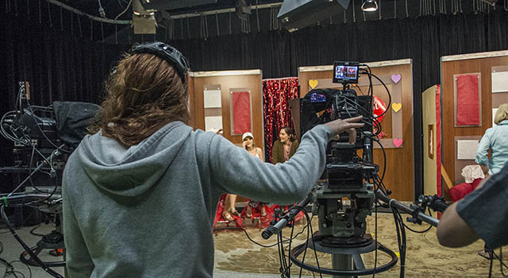
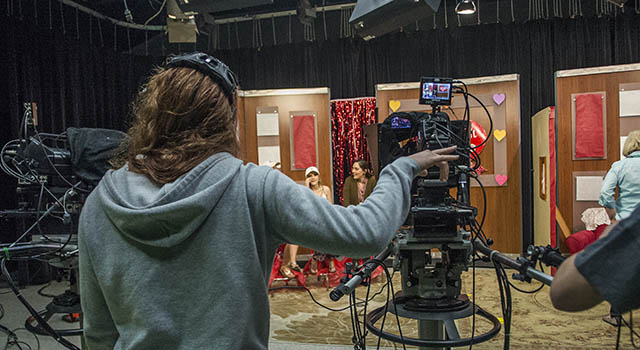
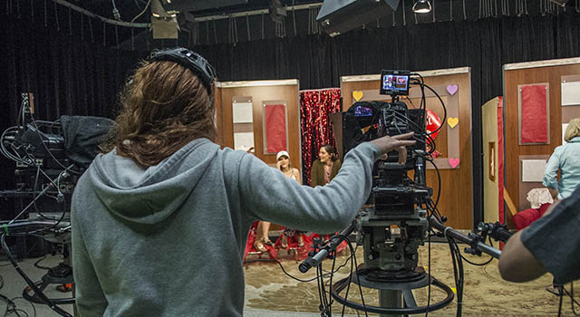

Crecencio Coronel
I am Crecencio Coronel, I was born in June 9, 2004. I was born and raised in California where I have lived all my life. In my elementary school years, I was a bit shy because I didn’t really know anyone at first, but it soon became easier. I started to become social and everyone knew who I was whenever I walked by them. It was fun to learn and meet new people every time because it was a way to become close friends with them. Friends are great when they are personal considering there are a lot of shared interests and ways to get along. As soon as I made friends, I would want to share a lot and get to know them instantly. Becoming close was great because it allows people to rely on each other and give trust which is what I tried to do a lot. Eventually, the middle school came around and became more difficult considering my elementary school friends when to different schools. I had to basically make new friends and start all over again. It felt trickier considering that it was not elementary school anymore and friends are trickier to make. There was also the balance of taking care of work which also became difficult. Teachers had started to become more strict and I had to follow more rules and gained more responsibilities for myself. Eventually, I did make friends that were still great and had great common traits that we shared with each other. There was a year that was more difficult than others, but I was able to get through those tough hurdles and go on to the next year. Eventually, there came high school became a roller coaster of emotions. My freshman year was tough considering that most of my teachers became strict and deadlines became sooner. I had already had my friends from middle school so that was not a big problem. I had a great group and was still growing with friends because we all got along throughout the years and did not want to separate. The rest of the years afterward became less bad and more calm with teachers that were more lenient. Students and teachers were nice and respectable since no one ever acted rude. People were nice and became the best kind of people. As of right now, I am currently in college adjusting to the experience I had in high school. It is difficult considering I have to start all over once again, but this is most likely the last time I would have to do anything like this. With college, it seems that people will get along for a long time and become great friends much later in life. I currently want to major in film because how that is what I have done for my entire life. I really enjoy editing videos and have taken film classes during my time in high school. I have been editing videos since I was very young and still find it very enjoyable today.
I have been editing since I was very young and enjoy what I have been doing for a long time. There are many facts that I learned about the industry and found out many things. I have learned that just days before winning cinema's most prestigious award, the studio where Westenhofer worked, Rhythm & Hues, filed for bankruptcy. The short documentary Life After Pi, which details the demise, claims over 20 VFX vendors closed or filed for bankruptcy in the decade prior to Life of Pi’s release. They’re still closing today. After working on the almost-billion-dollar hit Bohemian Rhapsody, London VFX vendor Halo went under in 2019, leaving four freelancers owed $70,500. The same year, Moving Picture Company's Vancouver office was shuttered not long after pulling out all the stops to redesign the animated hero of Sonic the Hedgehog in response to the widespread derision that met the original trailer. And Technicolor, the century-old motion picture processing company, filed for bankruptcy in 2020. How could so many high-profile companies regularly working on movies that bring in billions of dollars fail? It’s simple: the VFX industry, engaged in a lose-lose race to the bottom, is fundamentally broken. Even as a series of recent mergers and acquisitions inject a glimmer of hope into the VFX business, its workers are still struggling to get by — let alone produce great work. Speaking to Inverse, four visual effects veterans describe an industry marred by brutal deadlines, slashed budgets, mass layoffs, and industry-wide burnout. Todd Sheridan Perry has seen this all before. A freelance VFX supervisor with the looks of Patton Oswalt and the voice of a mild-mannered science teacher, Perry got his start in 1997 on a film you’ve probably never heard of called The Midas Touch. Since then, he’s worked on everything from Michael Mann’s Public Enemies and the Wachowskis’ Speed Racer to Marvel juggernauts like Doctor Strange and Black Panther. He’s seen the industry go through ups and downs. Now, after surviving one of the worst eras in VFX history, Perry remains cautiously optimistic as struggling special effects studios get bought up by deep-pocketed internet companies like Netflix. In November 2021, Netflix bought Scanline, the German VFX outfit behind Stranger Things, Cowboy Bebop, and various superhero movies from Marvel and DC. That same month, Unity Technologies (maker of the ubiquitous Unity game engine) announced plans to acquire Weta Digital, the iconic VFX company co-founded by Peter Jackson. The industry has gone through multiple phases where big studios buy up smaller VFX companies, and the only reason Perry thinks Netflix would want to own a VFX studio is bragging rights. But for Perry, even Netflix's cash reserves may not be enough to fix his industry. Because there’s no doubt the VFX industry has been in trouble for a very long time. 1993’s Jurassic Park had 63 VFX shots. In 1997, Starship Troopers made headlines for having almost 500. Today’s blockbusters routinely have over 2,000 VFX shots — and far less time to complete them.
Nowhere is this more obvious than the climactic set piece of Marvel's Black Panther. While the film was critically acclaimed, fans and critics found the final battle’s VFX decidedly shoddy, particularly a fight scene between T’Challah (Chadwick Boseman) and Killmonger (Michael B. Jordan) in the vibranium mines beneath Wakanda. Despite having worked on those special effects, Perry agrees they were lacking. Method Studio, where Perry was working at the time, had been assigned both the vibranium mine fight and the Wakanda plains battle. More resources put towards the latter meant less for the former. Functions that are handled differently between computer and software systems had to be reprogrammed at DNEG, and Perry says the studio had to catch up from scratch. If there’s one person who saw this problem coming, it’s probably Kerry Conran. Conran wrote and directed 2004’s Sky Captain and the World of Tomorrow, the first Hollywood movie where almost everything besides the actors was animated using special effects. 18 years later, he has a pretty pessimistic view of the industry he helped build up. Perry says he and his colleagues all know someone who’s dozed off driving home after a long day. And he says he and his team have continued to work crushing deadlines even after a movie’s premiere to finish shots for further rollout. But by the time a producer or test audience prompts a change that needs new animation, the VFX departments may have already moved forward and incurred costs on work that all gets thrown out. And because VFX jobs are paid for with flat rates, the extra work isn’t covered. Perry says some clients either don’t understand this workflow or intentionally take advantage of it. Whether daylight’s vanishing or a costume isn’t photographing right, a director throwing their hands in the air and declaring “We'll fix it in post” has become a cliche. But the VFX vendor has already submitted a bid so all the little prIf you’ve ever wondered why Marvel films everything in Atlanta or so many TV shows shoot in Toronto, the reason is simple: local governments pay a significant chunk of the production budget, creating tourist attractions and jobs that look good come election time. The same goes for VFX, but once again, this industry gets shafted. Governments offer rebates on VFX providers to set up shop, and artists upend their lives and families by moving across the world for work. But it can all go wrong fast. Savings trump loyalty, and if a bureaucrat in another government offers a better rebate, your formerly thriving VFX hub can become a ghost town overnight.problems pushed down the line add to a workload that hasn’t been budgeted. A related issue is the international nature of VFX work. Facilities are found worldwide, including in cities where workers are much cheaper and have fewer rights. According to Perry, that’s actually a feature of the industry, not a bug. Clients paying on time would be a start. Vendors often don't see any money until months after a job is completed and have little leverage to encourage quicker payments. Walt Jones, formerly a VFX Supervisor at Rhythm & Hues, says he’s spent over a year chasing money on some projects.
Experience
Dining hall employee
• Cleaned plates
• Stacked pots
• Behind the grill
Education
UC Riverside
University of California Riverside
University of California Riverside
Portfolio
 

